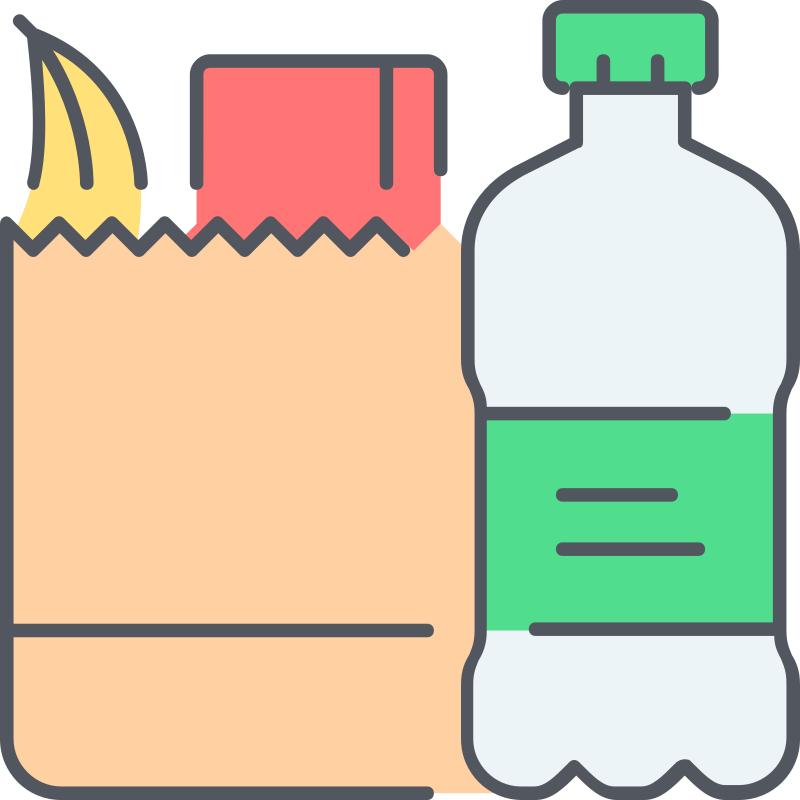

<main>
    <h3>Configuración de categorías</h3>
    <section>
        <article class="new__item" (click)="orderShowPopUp = true">
            <i class="fas fa-plus"></i> Crear nuevo
        </article>
        <ng-container *ngFor="let item of subCategories">
            <article>
                <header>
                    
                    <div class="details">
                        <h3>{{item.name}} <span><i (click)="showMaskAsctions(item)" class="fas fa-ellipsis-v"></i></span></h3>
                        <span><i class="fas fa-circle"></i> {{item.active}}</span>
                    </div>
                </header>
                <footer>
                    <div *ngIf="!item.category" class="dropdown">
                        <span>No agrupado</span>
                    </div>
                    <div *ngIf="item.category" class="dropdown">
                        <span>{{item.category.name}}</span>
                    </div>
                </footer>

                <div class="article__mask__actions" [ngClass]="{'show__block': flagShowMaskAsctions && item.selected}">
                    <i class="far fa-trash-alt"></i>
                    <i (click)="updateAccount(item.id)" class="far fa-edit"></i>
                    <i (click)="showMaskAsctions(item)" class="fas fa-times"></i>
                </div>
            </article>
        </ng-container>
    </section>

    <app-subcategory-form *ngIf="orderShowPopUp" 
        [idCategoryReceived]="subCategoryIdToSendUpdate"
        (sendOrderCloseFormularyPopUp)="receiveOrderCloseFormularyPopUp()">
    </app-subcategory-form>

</main>
